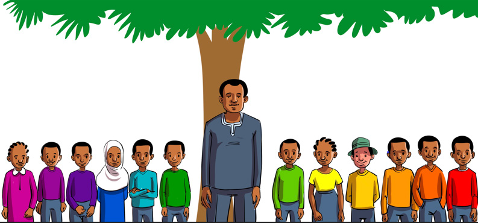

Soma hadithi ifuatayo, kisha fanya zoezi linalofuata.
Watoto wa Mwaka

Hapo zamani palikuwa na baba mmoja aliyeitwa Mwaka. Baba huyo aliishi katika kijiji cha Majira. Mwaka alikuwa na watoto kumi na wawili. Siku moja watoto wake waliamua kugawana kazi mbalimbali. Januari, Februari na Machi walisema kuwa watalima, kupanda na kupalilia mazao. Watoto wengine ambao ni Aprili, Mei na Juni walijiinamia chini. Ghafla wakasema kuwa watalinda mashamba yao. Watalinda dhidi ya ndege na wanyama. Baba yao akawaambia wafanye kazi kwa bidii.
Julai, Agosti na Septemba walikubaliana kuvuna mazao yaliyopandwa. Oktoba, Novemba na Desemba walisema kuwa watahifadhi nafaka ghalani. Vilevile, watauza mazao sokoni na kulima bustani za mboga. Baba yao aliwapongeza watoto wake kwa mipango mizuri. Aliwaambia kuwa kila mmoja atimize wajibu wake.